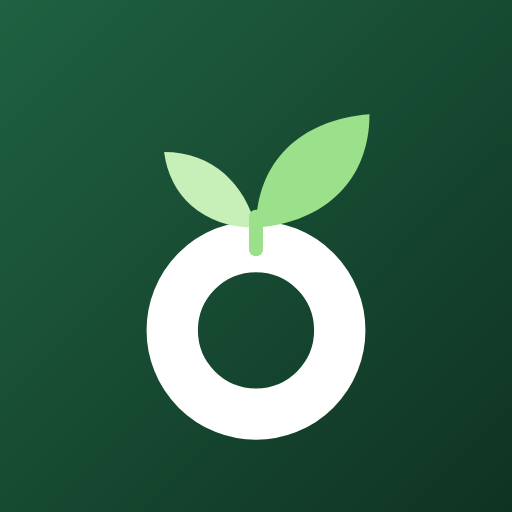
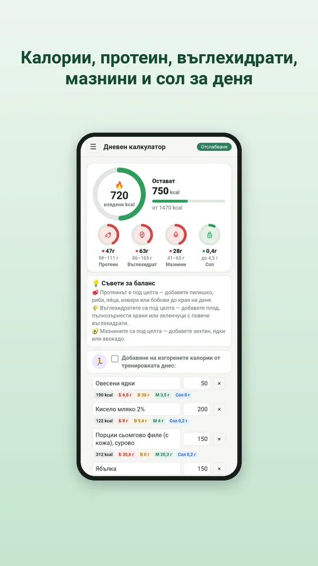
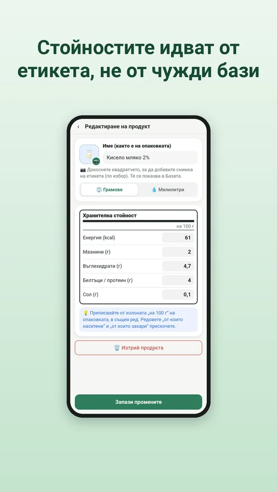
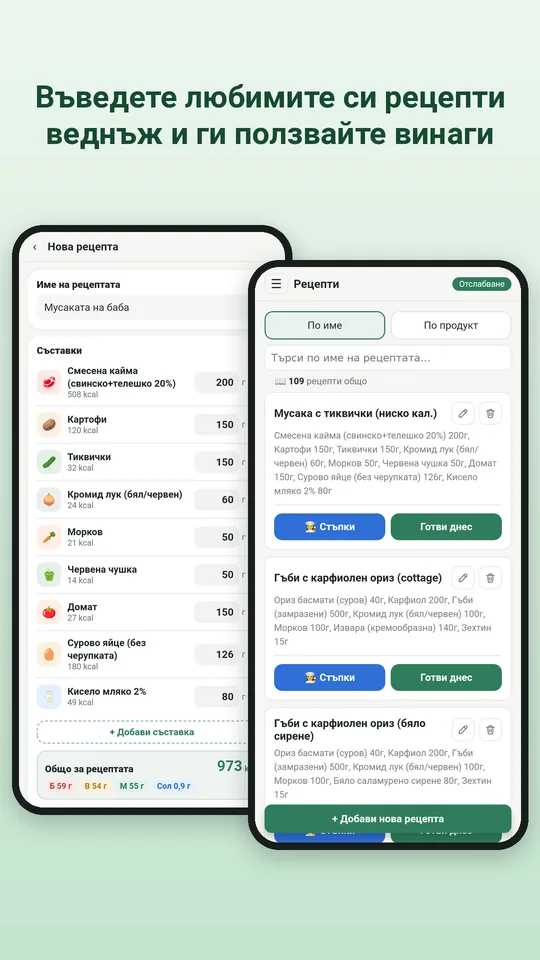
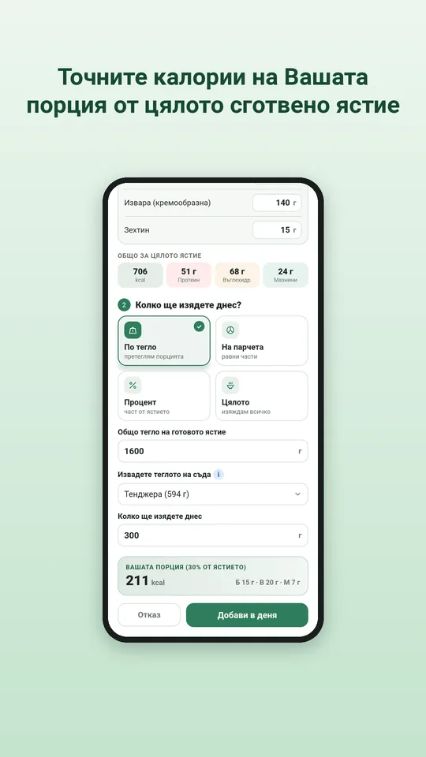
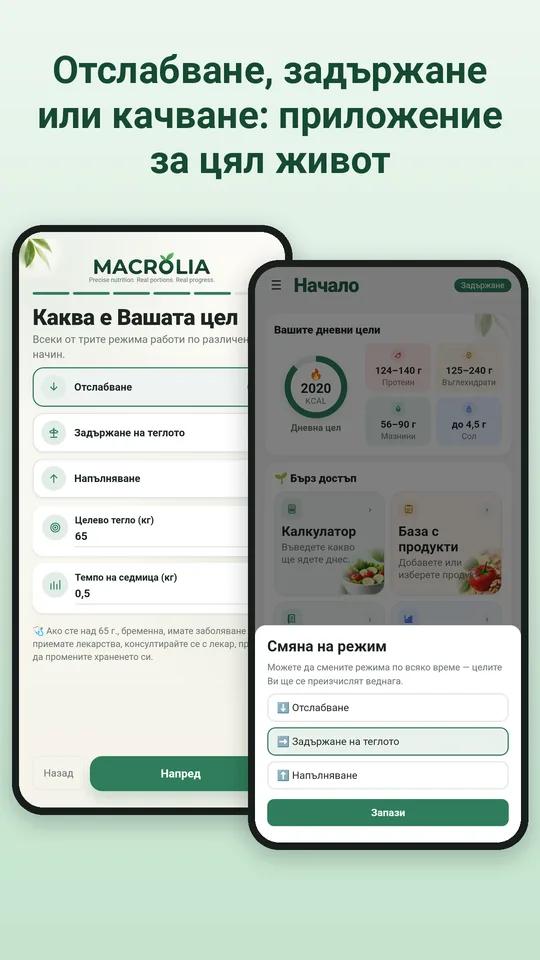
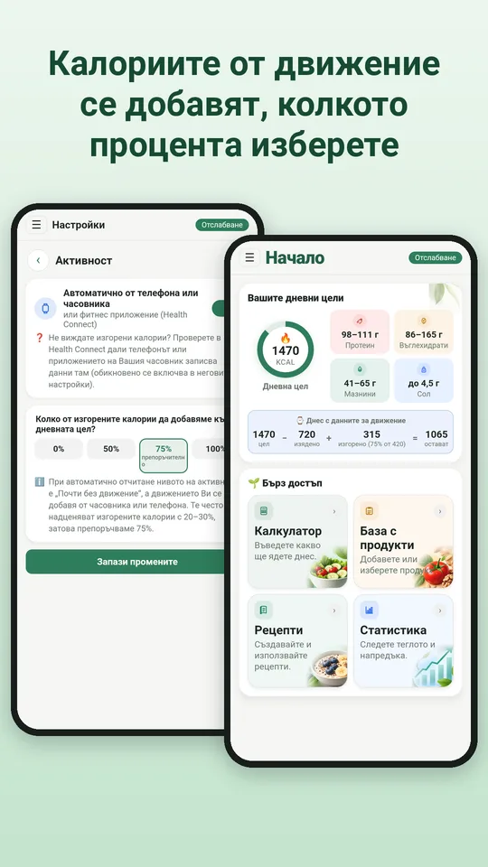
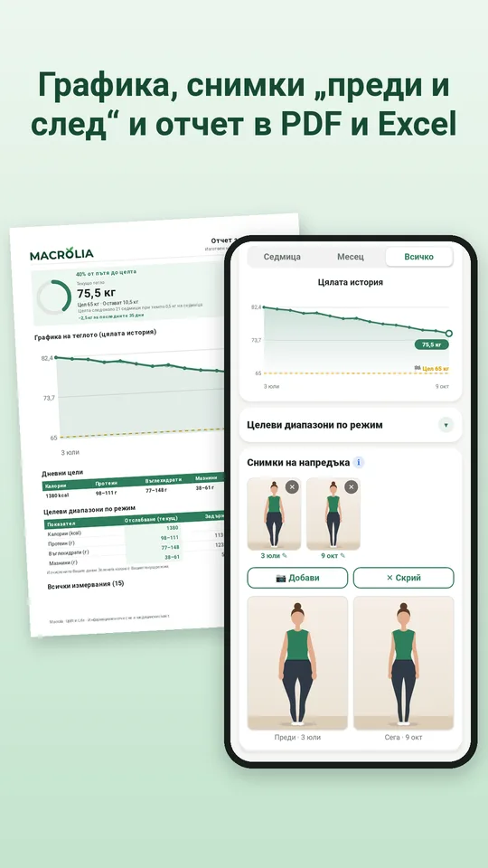
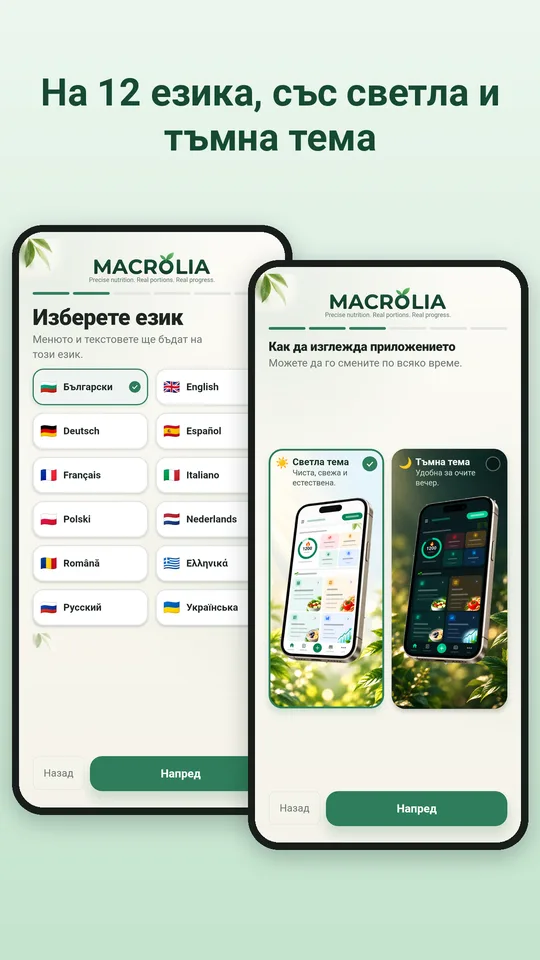

Точни калории и макроси от етикета. Вашите рецепти, порции и цели.
Дневник на храненето за хора, които искат точни числа, а не приблизителни. Всеки продукт идва от етикета на опаковката, която държите в ръка: въвеждате го веднъж и всеки ден и всяка рецепта се изчисляват вярно години напред.

Как изглежда








Защо Macrolia
Точност от етикета
Преписвате стойностите на 100 г от опаковката, затова числата съвпадат с това, което реално ядете. Без чужди, остарели или грешни данни.
Домашна готварска книга
Съберете рецептите от тетрадката на баба, от готварските книги и любимите сайтове. Macrolia смята калориите и макросите на всяка порция.
Точна порция от сготвеното ястие
Претеглете готовото ястие заедно със съда. Macrolia изважда теглото на съда и изчислява колко точно сте изяли.
За цял живот, не само за една диета
Отслабване, задържане или качване на тегло. Когато стигнете целта, Macrolia минава на „Задържане“ и Ви помага да запазите резултата.
Безопасни цели
Дневната цел се изчислява по формулата на Mifflin-St Jeor и клиничните препоръки, с безопасно темпо и долна граница за калориите.
Калории от движение
Чрез Health Connect: от телефона (стига и без часовник), от часовник или фитнес приложение. Вие избирате колко да се добавят към целта.
Вашите данни са само Ваши
Всичко остава на Вашия телефон. Не е нужна регистрация, име или имейл, няма реклами и проследяване. Можете да запазите резервно копие, да пренесете данните си на нов телефон и да изтриете всичко с едно докосване.
Абонамент
Macrolia се ползва с месечен или годишен абонамент, и двата със 7 дни безплатен пробен период. Отказвате по всяко време в Google Play.
На 12 езика, със светла и тъмна тема.
Macrolia не е медицинско изделие. Ако сте над 65 години, бременна, имате заболяване или приемате лекарства, консултирайте се с лекар, преди да промените храненето си.